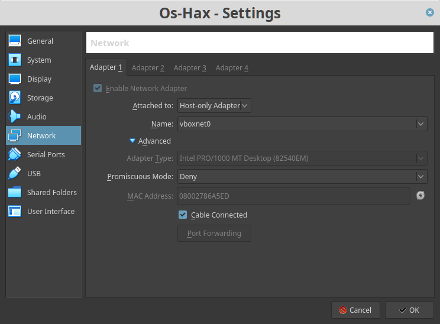
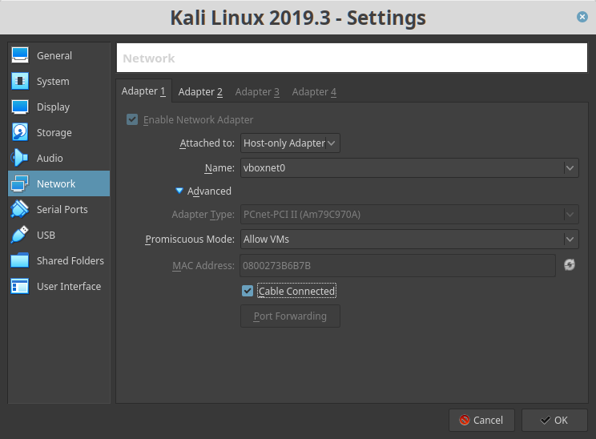
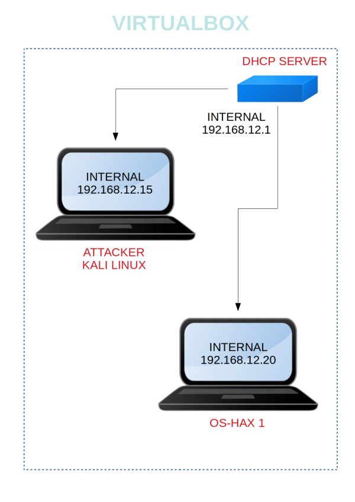

Os-Hax: 1
Penetrating Methodologies
▸ 1. Scan Network
▸ 2. Finding Services and Ports
▸ 3. Apache Exploit. Port 80
▸ 4. Enumerate directory
▸ 5. Navigate to img directory
▸ 6. Data Exfiltration-Steganography
▸ 7. SSH
▸ 8. Gain root access using awk
Difficulty: Intermediate
Flag: boot-root
Learning: exploit | web application Security | Privilege Escalation
Reference: https://www.vulnhub.com/entry/os-hax-1,389/
Walkthrough: https://download.vulnhub.com/media/os-hax/CTF.pdf
Download (Mirror): https://download.vulnhub.com/os-hax/Os-Hax.ova
Download (Torrent): https://download.vulnhub.com/os-hax/Os-Hax.ova.torrent
Install the machine on VirtualBox:
1. Download the file.
2. On Virtualbox choose File->Import Appliance.
3. Select the file “EVM.ova”.
4. Accept to import.
Virtual Machine Network Settings
Both Machines on “Host-only Adapter”.


Watch your Machine IP
Output:

Diagram

 Index
Index